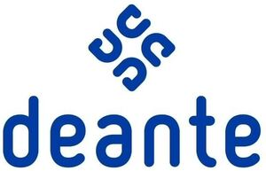

Trade Mark Journal No.2026/011 13 March 2026
WO0000001507958 (11,35)
Office of origin: European Union Intellectual Property Office (EUIPO)
Date of International Registration:23 October 2019
Date of designation in the UK:
24 October 2025

- Class 11
- Heating, ventilating, and air conditioning and purification equipment (ambient); drying installations; sanitary installations, water supply and sanitation equipment; sanitary and bathroom installations and plumbing fixtures; powered sanitary installations; sanitary apparatus and installations; apparatus for the supply of water for sanitary purposes; bath installations; bath armatures for water control; taps for washstands; bath taps; shower taps; faucet handles; taps; automatic faucets; touchless taps; taps for sanitary installations; mixer taps [faucets]; electronically controlled self-closing showertaps; spray fittings [parts of sanitary installations]; aerators for faucets [plumbing fittings]; jets for bath apparatus; whirlpool jets; push-on sprays for use with bathroom faucets; kitchen sink sprayers; sanitary drain armatures for baths; sanitary drain armatures for bidets; sanitary drain armatures for showers; sanitary drain armatures for basins; water faucet spout; tub spouts; wall-mounted spouts for bidets; wall-mounted spouts for wash-hand basins; wall-mounted spouts for sinks; wall-mounted spouts for baths; bathroom installations; shower installations; bathroom sinks; toilet bowls; toilets incorporating cisterns; bidets; urinals [sanitary fixtures]; toilet bowls and seats sold as a unit; showers; bath cubicles; bath tubs; spa baths [vessels]; saunas; sinks; metal sinks; fittings for sanitary purposes; bath linings; fittings for bidets; spray fittings [parts of shower installations]; bath fittings; shower fittings; fittings for basins; water outlets [faucets]; overhead showers; hand held showers; showers for sale in kit form; shower cubicles; shower panels; shower platforms; shower screens; shower doors; electric shower apparatus; hand sets being shower fittings; shower heads; nonmetallic screens for shower trays; shower hoses; bath tub jets; bathtub enclosures; tub overflows; bath linings, fitted; bath screens; toilet seats; cistern levers; cistern lever handles; flushing apparatus for urinals; water flushing installations; flushing tanks; toilet tank balls; vanity units being wash hand basins; vanity units incorporating basins [connected to the water supply]; regulating and safety accessories for water apparatus; safety fittings for water pipes; stop cocks for regulating water; apparatus for controlling water supply; pressure supervision apparatus [safety apparatus for water pipes]; water pressure reducers [regulating accessories]; water regulating apparatus; valves [plumbing fittings]; mixing valves [faucets]; flexible pipes being parts of shower plumbing installations; flexible pipes being parts of basin plumbing installations; flexible pipes being parts of bath plumbing installations; flexible pipes being parts of sink plumbing installations; elbow bends (plastic -) for pipes [parts of sanitary installations]; flexible strip wound pipes of metal [parts of sanitary installations]; enclosures of metal for showers; plugs of metal for sinks; plugs of metal for baths; plugs of metal for showers; pipes [parts of sanitary installations]; waste pipes for sanitary installations; waste fittings for sanitary ware; strainers for use with shower trays; sink strainers [plumbing fittings]; spouts [plumbing fittings]; washers for water taps; sanitary ware made of stoneware; sanitary ware made of porcelain; stainless steel sanitary ware; wash basin stoppers; taps for water supply installations; taps for the control of water flow; cast iron parts for pipes [parts of sanitary installations]; electric water purification filters for household purposes; faucet filters [plumbing fittings]; filters for drinking water; water filters; burners, boilers and heaters; water distributor armatures for heating; heating installations for fluids; tubular heating elements; electric water heating apparatus; bathroom heaters; water heaters; circulators [water heaters]; temperature control valves [parts of water supply installations]; thermostatic valves; electric towel warmers; heated towel rails; towel steamers; disinfectant dispensers for washrooms; hand driers; hair dryers; clothes dryers; electric clothes dryers [heat drying]; lighting installations; lighting apparatus; electric lamps; light bars; spot lights for household illumination; hangings for lamps.
- Class 35
- Retail services in relation to sanitary installations; wholesale services in relation to sanitary installations; retail services in relation to sanitation equipment; wholesale services in relation to sanitation equipment; retail services in relation to water supply equipment; wholesale services in relation to water supply equipment; retail services in relation to metal hardware; wholesale services in relation to metal hardware; retail services in relation to furnishings; wholesale services in relation to furnishings; retail services in relation to lighting; wholesale services in relation to lighting; wholesale services in relation to cookware; retail services in relation to cookware; retail services in relation to toiletries; wholesale services in relation to toiletries; retail services in relation to hygienic implements for humans; wholesale services in relation to hygienic implements for humans; retail services in relation to cleaning articles; wholesale services in relation to cleaning articles; retail services in relation to cleaning preparations; wholesale services in relation to cleaning preparations; retail services in relation to tableware; wholesale services in relation to tableware.
Deante sp. z o.o.
Representative: Julia Anna Chlebny, ul. Warszawska 88, PL-91-503 Łódź, POLAND